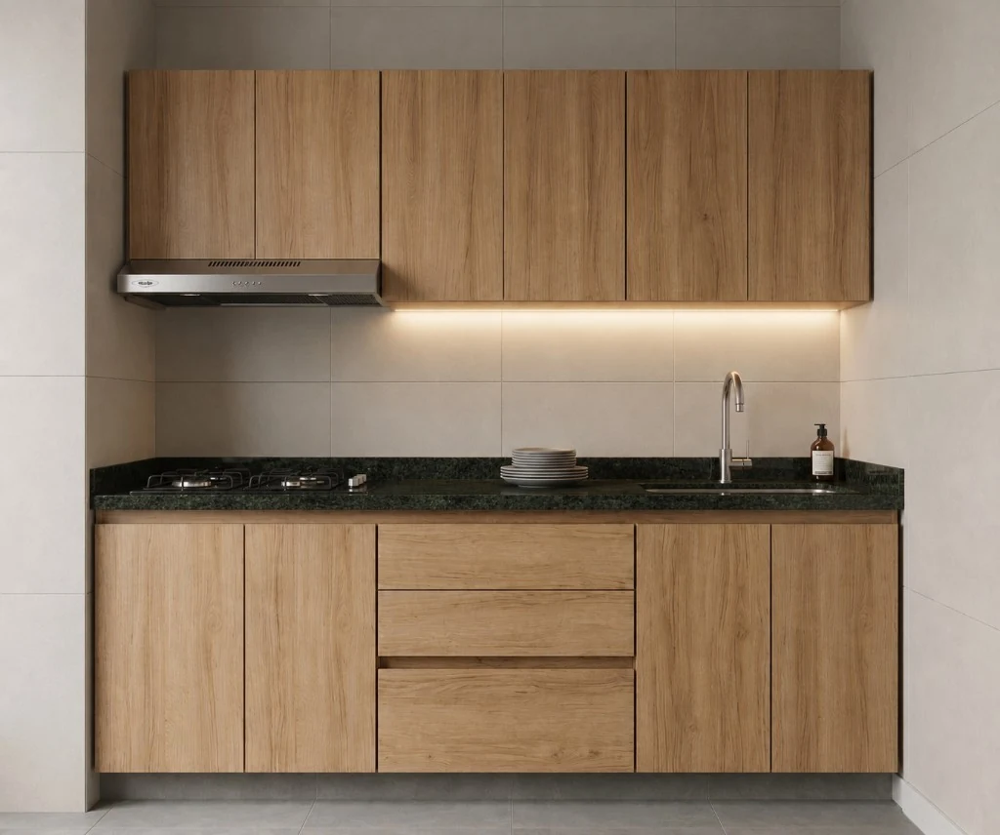
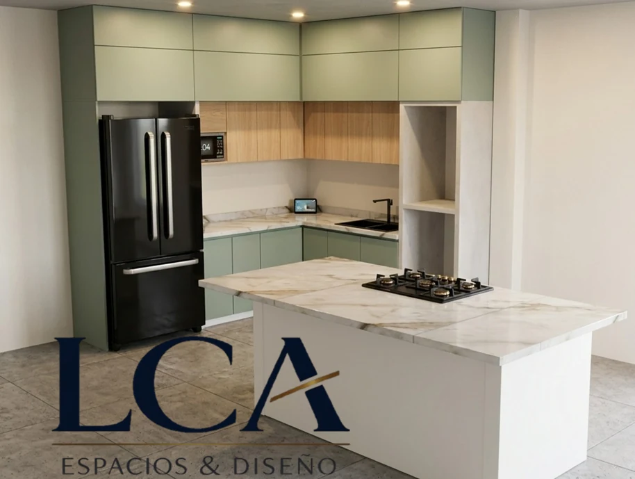

Nos cuentas
tu idea.
Qué quieres transformar, dónde está el proyecto y qué necesitas resolver. Si tienes fotos o referencias, puedes compartirlas en la conversación.
- Tipo de espacio
- Municipio y momento del proyecto
- Referencias y necesidades

Cocinas, closets y mobiliario que empiezan con una idea: la forma en que quieres vivir.
El primer café. Lo que guardas. La forma en que te mueves. Todo cuenta al pensar un espacio.
Explora las referencias de LCA y conversemos sobre distribución, almacenamiento y acabados. Una visita permite verificar las medidas y preparar el diseño de tu proyecto.
Explorar espaciosSelección de imágenes publicadas en el catálogo de LCA. Las medidas, materiales y acabados se definen para cada proyecto.
La visita técnica y el diseño 3D ayudan a pasar de una referencia a una propuesta para tu hogar.

Visual del catálogo del servicio de visita y diseño.
Qué quieres transformar, dónde está el proyecto y qué necesitas resolver. Si tienes fotos o referencias, puedes compartirlas en la conversación.
El equipo confirma cobertura, condiciones del servicio y disponibilidad. En el lugar se verifican medidas y características del espacio.
Con esa información se prepara el diseño y se conversa sobre materiales, alcance y cotización. Las decisiones se revisan contigo.
Un espacio a medida comienza con buenas preguntas. Cuánto guardas, qué electrodomésticos usas y cómo quieres moverte por tu cocina.
Imagen del catálogo LCA. La propuesta final se adapta a las condiciones de tu espacio.
Prepara una solicitud de visita con la información esencial. Podrás revisarla antes de abrir WhatsApp.
El municipio, una idea de lo que necesitas y, si las tienes, fotos del espacio y referencias. Las medidas aproximadas orientan la conversación; el equipo verifica las definitivas.
No. La fecha, la cobertura y las condiciones del servicio se acuerdan directamente con LCA por WhatsApp.
Sí. El catálogo presenta cocinas, closets y otras soluciones de mobiliario. Indica cuáles te interesan para que el equipo revise el alcance.